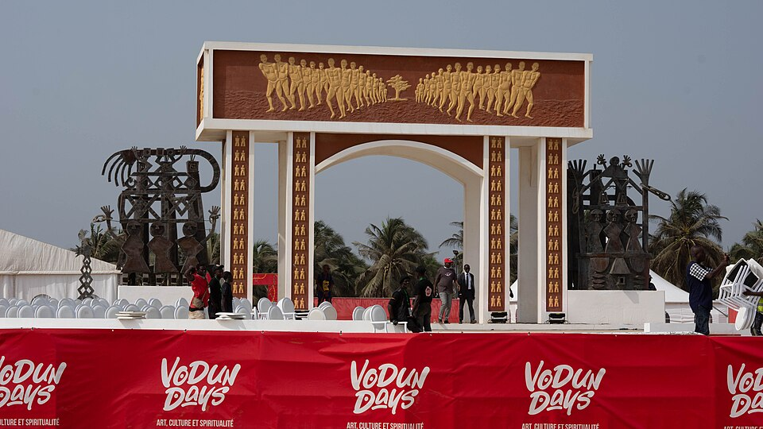
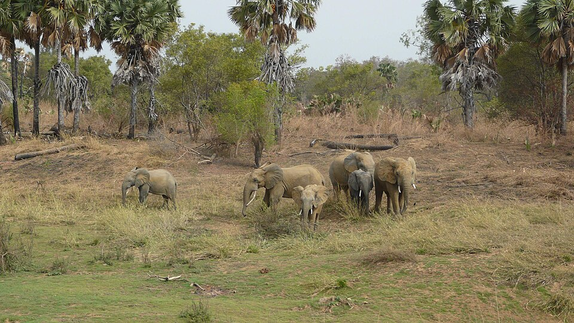

Galerie photo
Passez la souris sur une photo, ou utilisez la touche Tab pour aller d'une photo à l'autre.
Survolez une photo ci-dessous pour l'afficher ici.







Crédits photos
Toutes les photos viennent de Wikimedia Commons :
- Marché Dantokpa, Alacoolwiki, CC BY 4.0
- Grande mosquée de Porto-Novo, Gildaskiki, CC BY-SA 4.0
- Porte du Non-Retour, Borisghost, CC0
- Temple des Pythons, Ji-Elle, CC BY-SA 4.0
- Palais royaux d'Abomey, Karalyn Monteil, CC BY-SA 3.0 IGO
- Village de Ganvié, Ondřej Havelka, CC BY-SA 4.0
- Cases de Ganvié, Manu25, CC BY-SA 3.0
- Éléphants de la Pendjari, Marc Auer, CC BY 2.0
- Chutes de Kota, Ji-Elle, CC BY-SA 4.0
- Grand-Popo, Ji-Elle, CC BY-SA 4.0
- Bouche du Roy, Kulttuurinavigaattori, CC BY-SA 4.0